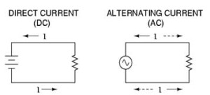

Alternating voltage (A.C) may be generated by two ways - rotating a coil in a magnetic field or by rotating a magnetic field within a stationary coil. The value of voltage depends upon the number of turns in the coil, strength of the field and the speed at which the coil or magnetic field rotates. Alternating voltage may be generated in either of the two ways mentioned above. But rotating field method is mostly used in practice. Faraday’s laws of electromagnetic induction provide us with e.m.f induced in the coil which is equal to rate of change of flux linkages of the coil. It is seen that induced emf varies as sine function of time angle ω t and when emf is plotted against time we get a wave called sinusoidal wave.
Alternating current circuits improves the versatility and usefulness of electrical power system. A.C voltage source changes polarity over time. AC machines that is motor, generators or transformers work on ac supply and their operating principle is also based on the same. We all know about motor and generator action. Transformer transfers power from one circuit to another and this is done keeping the frequency unchanged. Transmission of dc power in long distance is economical and that is known as HVDC transmission. In ac voltage loss is an important factor. But generation, transmission and its stepping down and up of such voltage level is much easier in case of ac voltage.
 by
by